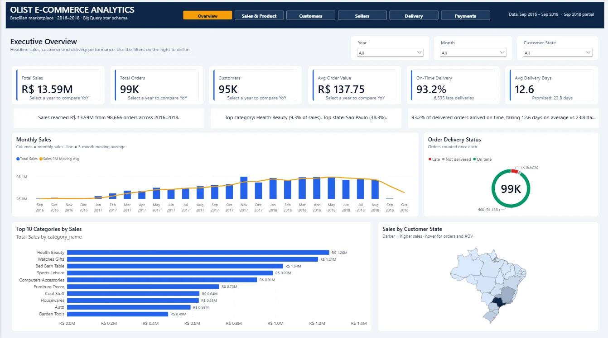
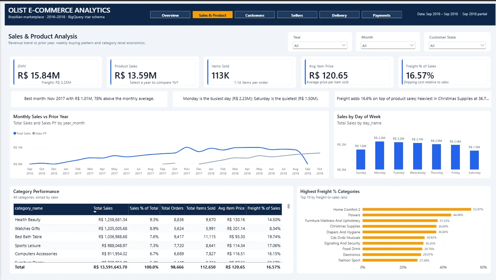
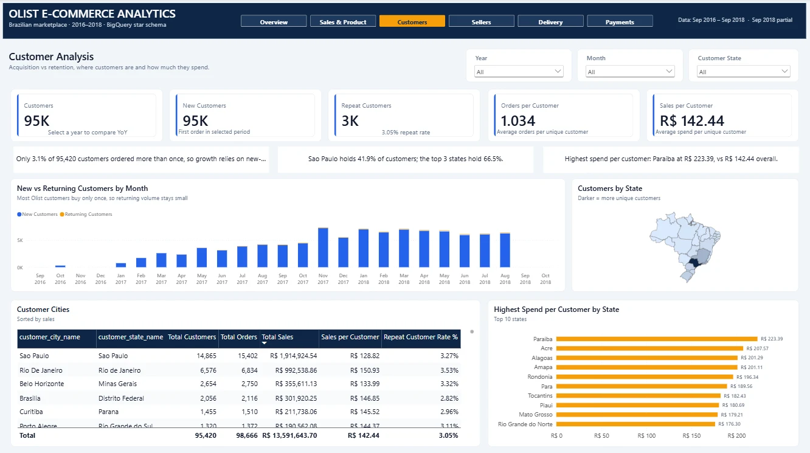
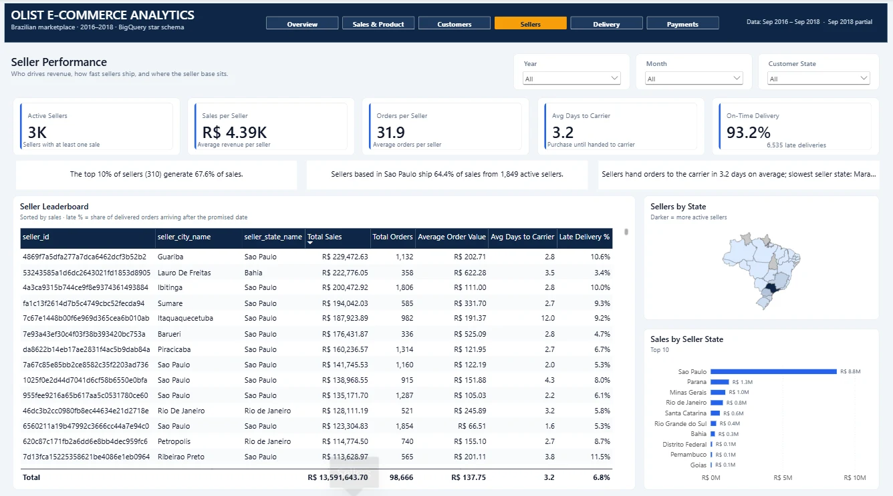
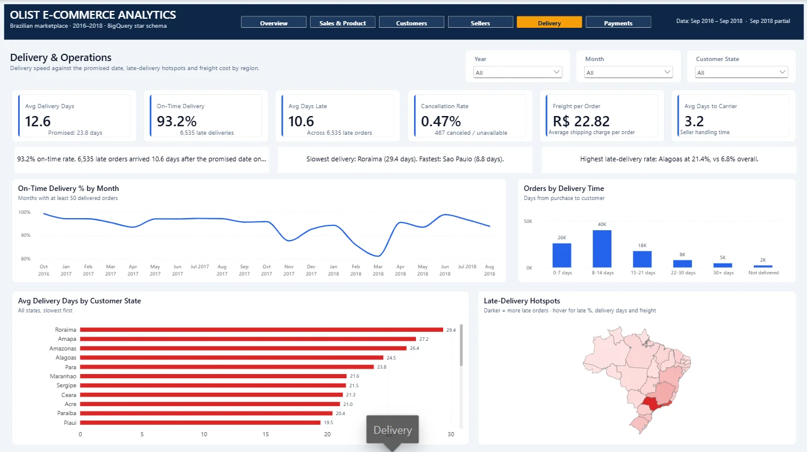
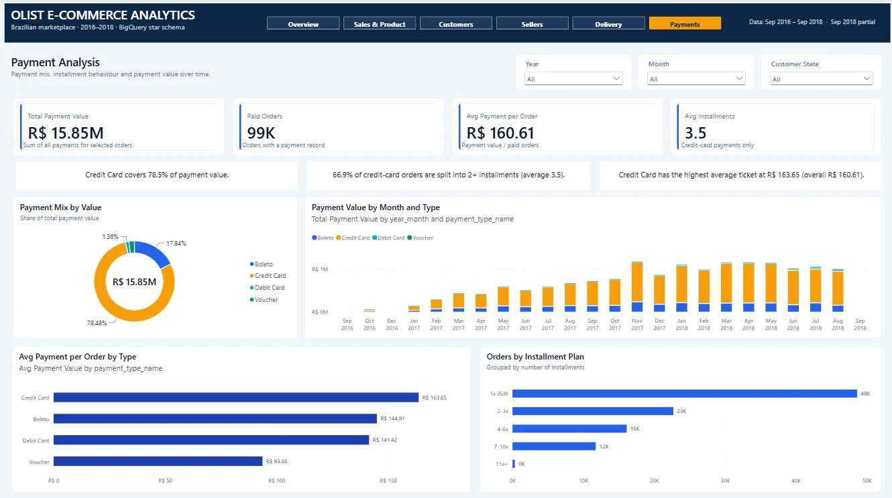

The problem
Olist's marketplace data is spread across 9 tables (orders, items, payments, reviews, customers, sellers, products, geolocation, category translation). Answering simple questions like "which states are late?" means re-joining everything each time.
What I built
- Star-schema data mart in BigQuery:
fact_order_items(grain: one product item in one order) andfact_order_payments, withdim_customers,dim_products,dim_sellers, anddim_date. - Six-page Power BI dashboard: Overview, Sales & Product, Customers, Sellers, Delivery, and Payments, each with year, month, and state filters.
- 86 DAX measures organised in display folders: time intelligence (YoY, MoM, YTD, 3-month moving average), customer retention (new vs returning, repeat rate), delivery performance, and payments.
- Text insights written in DAX under the KPI cards, which rewrite themselves for the current filter selection.
- Saved as a Power BI Project (.pbip), so the report and model are plain text files that can be reviewed and versioned in Git.
Dashboard pages






Sample DAX
-- Time intelligence Sales YoY % = VAR py = [Sales PY] RETURN IF ( NOT ISBLANK ( py ), DIVIDE ( [Total Sales] - py, py ) ) -- Delivery performance Late Delivery % = DIVIDE ( [Late Orders], [Delivered Orders] ) On-Time Delivery % = IF ( [Delivered Orders] > 0, 1 - [Late Delivery %] )
What the data says
Sales: November 2017 reached R$988K, +52% vs October (Black Friday). Growth flattens from April 2018 at about R$0.85–0.98M per month.
Categories: 17 of 71 categories make up 80% of revenue.
Delivery and satisfaction: 6.8% of delivered orders arrive after the promised date, and the late rate varies a lot by state:
Recommendations
- Fix North-East SLAs first: MA, CE, and BA have 2.7–3.9× the late rate of São Paulo.
- Win the second order: with 97% one-time buyers, a post-delivery voucher for satisfied customers is the cheapest growth lever.
- Plan for November peaks in stock and logistics capacity.
Next iteration
- Publish the dashboard to Power BI Service with scheduled refresh from BigQuery.
- Add data-quality tests on the mart (row counts, nulls, key integrity).
Slides
The full case study as a slide deck. Open or download the PDF.
Analytics web app In progress
I'm also building a custom web app on top of the same data mart. It runs locally today; a public demo link will follow.
- FastAPI backend with a routes → services → repositories structure. One global filter set (date range, year, month, state, category) is passed to BigQuery as query parameters, which keeps it safe from SQL injection. Dockerised.
- React + Vite frontend with 4 pages (Overview, Products, Customers, Logistics) and insight text generated from the data on screen.